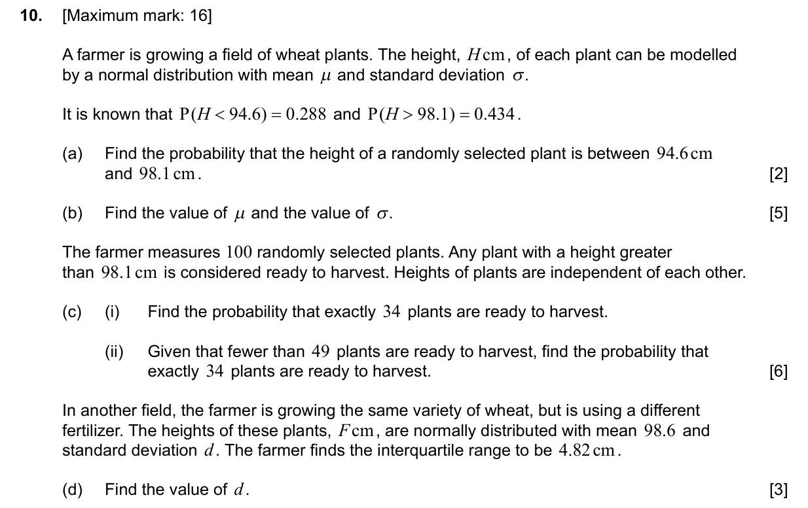
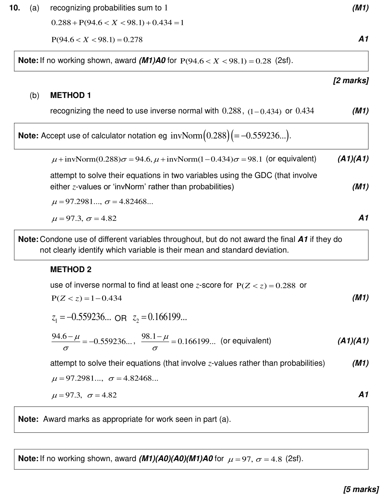
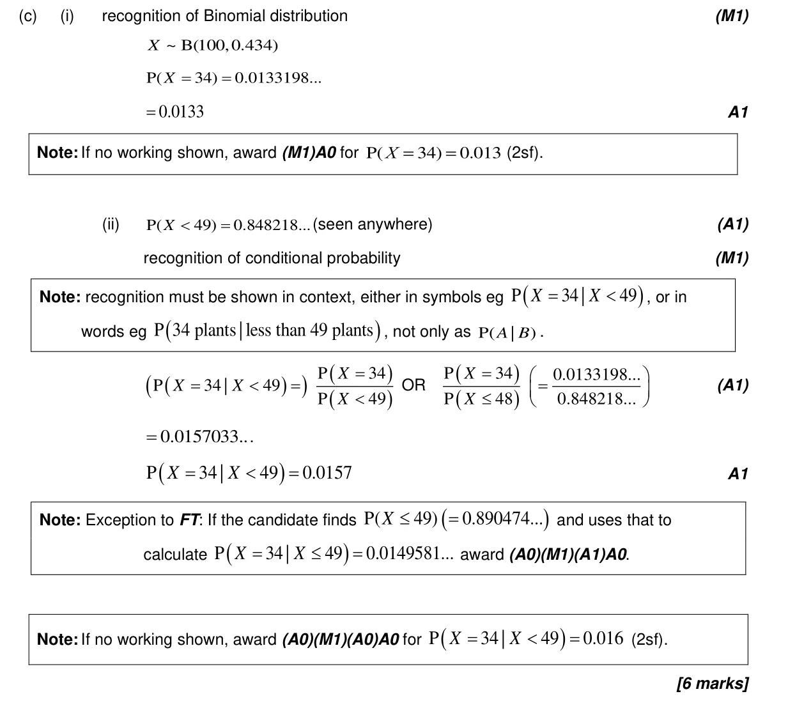
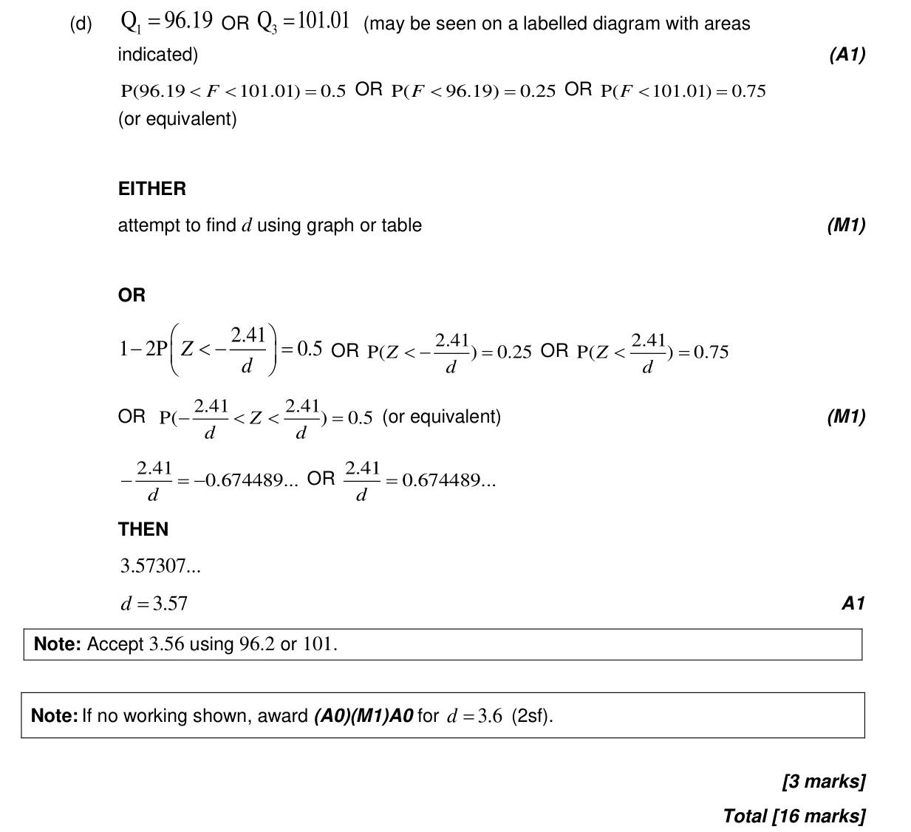

4.12 Standardization of normal variables4.8 Binomial distribution4.11 Formal conditional probability and independence4.9 Normal distribution and calculations4.3 Mean, median, mode, grouped mean, standard deviation, quartiles and IQR
Question

Markscheme


